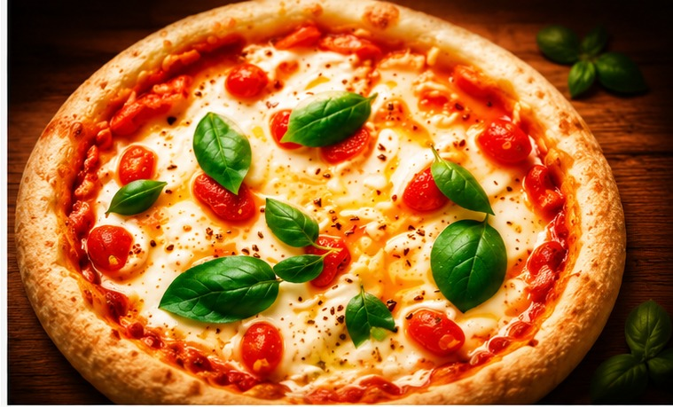
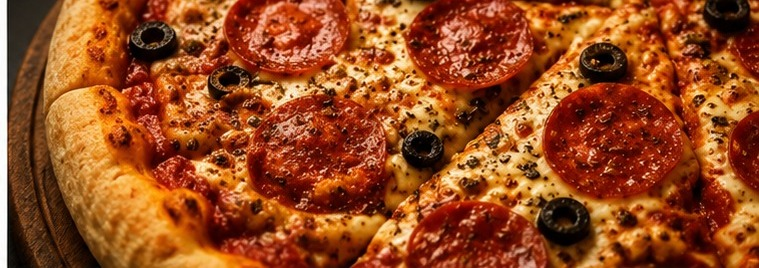
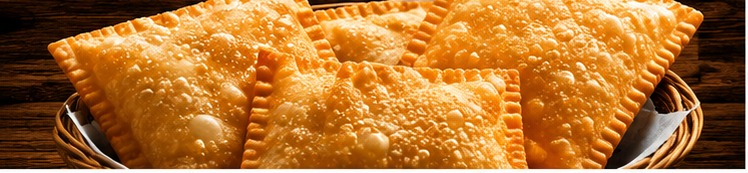

Pizzaria do GordoNovo Horizonte · SP
Quem faz a massa
Servimos almoço de segunda a sábado, das 11h às 14h, e abrimos para o jantar de quarta a segunda, a partir das 18h. Sem atalho: massa fermentada com carinho e assada na lenha, do jeito que a tradição pede. Venha experimentar!

Quando abrimos
Almoço de segunda a sábado. Jantar de quarta a segunda. Domingo é só à noite — e terça é o único dia de descanso do forno.
Da cozinha pra sua mesa

